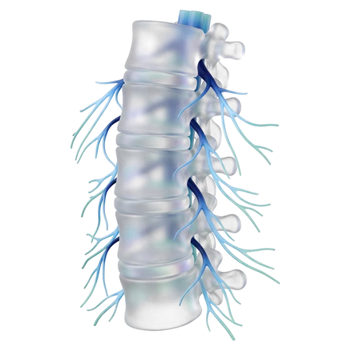
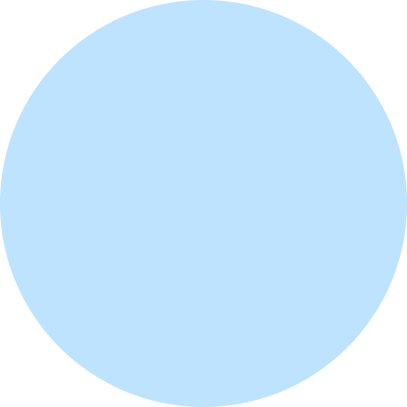
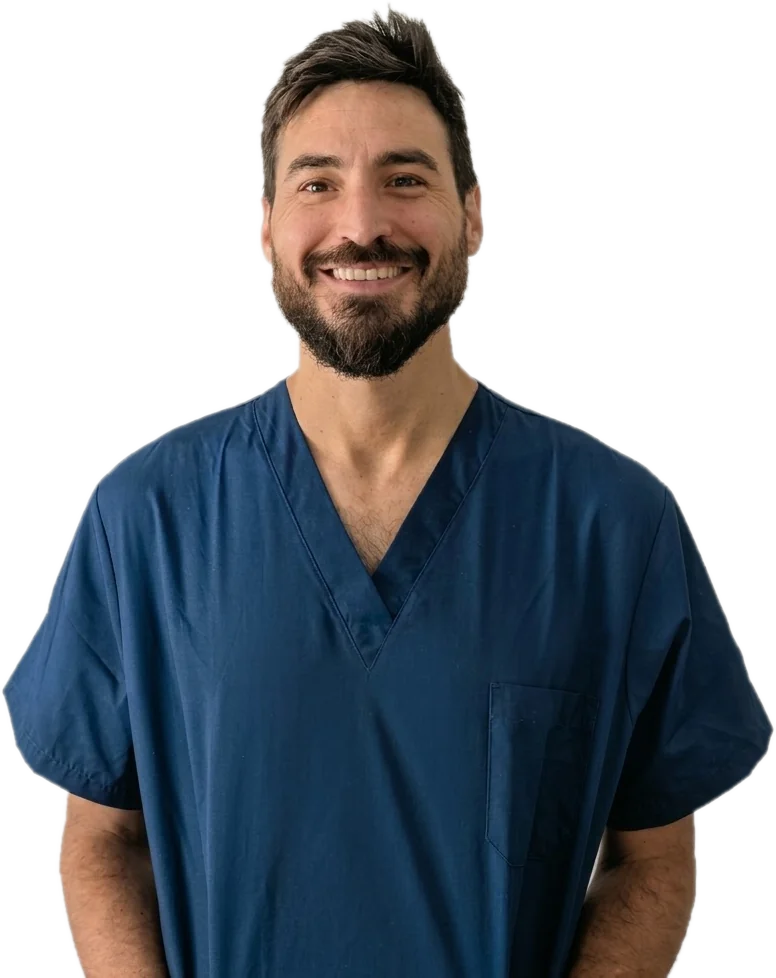
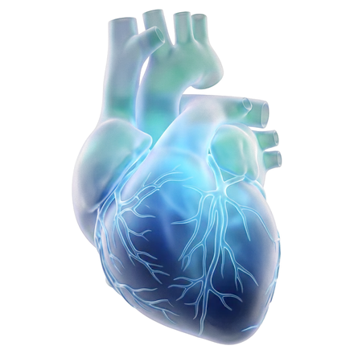
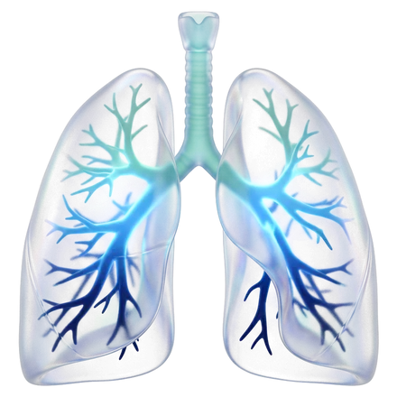

Terapia del dolore
Percorsi antalgici personalizzati e sempre aggiornati per il dolore acuto e cronico, con procedure infiltrative ecoguidate per assicurare massima precisione ed efficacia.
Il dottor Michele Mascia è Medico-Chirurgo Specialista in Anestesia, Rianimazione, Terapia Intensiva e del Dolore. Gestione clinica e peri-operatoria complessa e management del dolore acuto e cronico.
Prenota una visita
Medico anestesista
Dr. Michele Mascia
Anestesista-Rianimatore
Il dott. Michele Mascia è specializzato nella gestione clinica e peri-operatoria complessa e nel trattamento del dolore cronico e acuto. Solida esperienza in contesti chirurgici ad alta complessità, dalla chirurgia robotica, laparoscopica e bariatrica, alla neurochirurgia del rachide e all'ortopedia maggiore. Formazione in ambito di terapia del dolore con approccio farmacologico e mininvasivo (trattamenti infiltrativi ecoguidati e ozonoterapia).
Approccio rigorosamente basato sulle evidenze scientifiche (EBM), focalizzato sull'ottimizzazione e personalizzazione del percorso peri-operatorio e sulla sicurezza clinica in contesti chirurgici ad alta complessità.
Gli ambiti clinici in cui si è sviluppata la mia esperienza.

Percorsi antalgici personalizzati e sempre aggiornati per il dolore acuto e cronico, con procedure infiltrative ecoguidate per assicurare massima precisione ed efficacia.

Valutazione preoperatoria completa, esami consigliati e piano anestesiologico condiviso con te.

Gestione completa dal pre-ricovero fino al rientro al domicilio, con percorsi mirati e personalizzati per un recupero funzionale ottimale e precoce.
Esperienza in chirurgia robotica, laparoscopica e bariatrica, neurochirurgia del rachide e ortopedia maggiore, con tecniche di anestesia combinate (anestesia generale, neuroassiale e loco-regionale).
I principi che guidano la pratica anestesiologica ed algologica: esperienza clinica, aggiornamento continuo sulle più recenti evidenze scientifiche e linee guida e approccio multidisciplinare (grazie a strette collaborazioni con figure professionali diverse) per garantire un percorso di cura mirato e personalizzato.
Specializzazione in Anestesia, Rianimazione, Terapia Intensiva e del Dolore all'Università di Firenze con 70/70 e lode. Socio ordinario SIAARTI, con aggiornamento continuo su tecniche e terapie farmacologiche.
Ogni scelta anestesiologica segue le linee guida e la letteratura scientifica più aggiornata (EBM), calibrata sul profilo clinico del singolo paziente.
Protocolli ERAS (Enhanced Recovery After Surgery) per ottimizzare il percorso peri-operatorio: meno dolore, meno complicanze, recupero funzionale più rapido.
Stretta collaborazione con professionisti di diverse specialità (neurochirurgia, ortopedia, urologia, chirurgia generale, neurologia, fisiatria, fisioterapia, psicologia, scienze della nutrizione) per una completa presa in carico del paziente e delle sue necessità.
Le quattro fasi in cui si articola la gestione anestesiologica di un intervento.
Analisi della storia clinica, degli esami e della terapia in corso per definire il profilo di rischio del paziente.
Scelta della tecnica anestesiologica (generale, neuroassiale o locoregionale) e indicazioni su digiuno pre-operatorio e sulla gestione della terapia domiciliare.
Monitoraggio continuo dei parametri vitali e della profondità anestesiologica per tutta la durata della procedura.
Analgesia e recupero post-operatorio con impostazione della terapia antalgica post-operatoria e gestione multidisciplinare per un recupero ottimale dopo l'intervento.
Le quattro fasi in cui si articola la gestione e il trattamento personalizzato della sintomatologia dolorosa.
Inquadramento clinico completo attraverso l'analisi accurata della storia medica, delle caratteristiche del dolore e degli esami diagnostici (eseguiti o eseguibili) per una precisa identificazione eziologica.
Esposizione e valutazione delle opzioni terapeutiche disponibili, con combinazione di terapie farmacologiche e procedure infiltrative mirate, mininvasive ed ecoguidate e ozonoterapia, per un percorso di cura condiviso, su misura e multimodale.
Impostazione di terapie farmacologiche analgesiche e neuromodulanti e/o esecuzione delle procedure interventistiche concordate, svolte in un ambiente sicuro, confortevole e con strumentazione dedicata.
Monitoraggio periodico dei risultati clinici nel tempo, eventuale adeguamento del piano di cura e supporto costante per garantire la progressiva ottimizzazione della qualità di vita.
Le domande che i pazienti mi fanno più spesso prima di un intervento.
Sono informazioni generali e non sostituiscono la visita anestesiologica.
Il dottor Michele Mascia è medico-chirurgo specialista in Anestesia, Rianimazione, Terapia Intensiva e del Dolore. Si occupa di gestione clinica e peri-operatoria complessa e di trattamento del dolore cronico e acuto, con esperienza in chirurgia robotica, laparoscopica e bariatrica, neurochirurgia del rachide e ortopedia maggiore. Svolge attività clinica a Bologna, Modena e Reggio Emilia e attività ambulatoriale a Reggio Emilia, Modena e Acerra.
In genere niente cibo solido nelle 6 ore precedenti, mentre acqua e liquidi chiari (senza latte né polpa) sono consentiti fino a 2 ore prima. Le indicazioni precise per ogni caso vengono fornite durante la visita anestesiologica.
Molti farmaci vanno presi regolarmente anche il giorno dell'intervento. Alcuni, come anticoagulanti, antiaggreganti e certi antidiabetici, vanno sospesi o modificati con tempi precisi. Porta alla visita l'elenco completo e non sospendere nulla di tua iniziativa.
La scelta dipende dal tipo di intervento, dalle tue condizioni di salute e anche dalle tue preferenze. La decisione viene presa con l'anestesista durante la valutazione preoperatoria. In chirurgia ortopedica e spinale si usano spesso tecniche locoregionali, da sole o insieme all'anestesia generale.
Durante l'anestesia generale i parametri vitali e la profondità dell'anestesia sono monitorati di continuo e il dosaggio viene adattato momento per momento. Il risveglio durante l'intervento è un evento molto raro.
Il controllo del dolore inizia già in sala operatoria, ad esempio con blocchi nervosi mirati, e prosegue con una terapia personalizzata nei giorni successivi. L'obiettivo è farti muovere presto e con il minimo disagio.
ERAS (Enhanced Recovery After Surgery) è un insieme di pratiche basate sulle evidenze scientifiche, applicate prima, durante e dopo l'intervento: digiuno più breve, anestesia e analgesia mirate, mobilizzazione precoce. L'obiettivo è ridurre dolore e complicanze e tornare prima alla vita di tutti i giorni.
Oggi l'anestesia è molto sicura. Gli effetti più comuni, come nausea, mal di gola o brividi, sono lievi e passeggeri. I rischi specifici dipendono dalla storia clinica di ciascun paziente e vengono valutati durante la visita preoperatoria.
Le sedi in cui il Dr. Mascia svolge attività ambulatoriale.
Reggio Emilia
Modena
Acerra
Per informazioni, appuntamenti e richieste di consulto è possibile rivolgersi alle segreterie degli ambulatori, che gestiscono prenotazioni e comunicazioni con i pazienti. I recapiti delle strutture sono consultabili nella sezione dedicata.